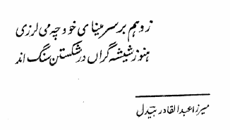

Hanoz Shīsha-Garān

ज़ी वहम बर सर-ए-मीना खुद श’ह मी लरज़ी
हनोज़ शीश’ह गराँ दर शिकस्तन संग अन्द
– मीर्ज़ा अब्द-अल-क़ादिर “बेदिल”
Why are you trembling, out of delusion, on account of your heart?
The glass-blowers are the ones who created it, and they are still the only ones with the authority to break it.
– Mirza Abd-al-Qadir “Bedil”
My dad, Dr. Kesri Kishor, was a teacher, a professor of pharmacology at King George’s Medical College in Lucknow, India. He was also an Urdu poet inspired by the Indo-Persian poetry tradition, in particular by Mirza Abd-al-Qadir “Bedil”, a 17th Century Indian poet of Uzbek ancestry. A collection of my dad’s poems was published in 1978, but since the poems are written in Urdu, a script I cannot read, I did not fully comprehend the content and quality of these poems. Thankfully, my mom hand wrote the poems in Hindi, so I am able to read them and even transliterate them.
Since I didn’t understand the meaning of the couplet that inspired the title of the book, I turned to Hajnalka Kovács1, a scholar of “Bedil” at the University of Chicago, who very kindly translated the above couplet.
Now, 34 years after the book was published, I have made available the entire content of the book, along with Hindi transliteration of the poems where available. This is a long-term project, and as I, with the help of a few dear friends, am able to transliterate more poems, I will add them to the web site.
- Hajnalka Kovács was completing her Ph.D. at the University of Chicago when I contacted her in 2011. She is now a preceptor at the Dept. of South Asian Studies at Harvard University. ↩